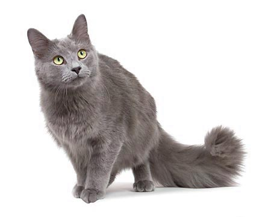

러시아의 아르한겔스크 제도에서 유래해 영국의 종 개량을 통해 만들어진 종. 러시아 황실, 영국의 빅토리아 여왕이 키운 고양이의 후손이라고도 한다. 1875년 '아칸젤 고양이'라는 이름으로 소개되었다. 소개될 당시에는 당시 유행을 따라 샴, 브리티시 종과 닮도록 교배되었는데, 이후 아칸젤 고양이의 원형을 복구시키기 위한 노력이 이뤄졌다. 1912년 러시안 블루로서 독자적 종으로 인정받았고, 현재까지 이어져 오고 있다.
포린 형의 늘씬하고 균형잡힌 체형. 무게는 3.5~4.5kg 정도. 날카로운 역삼각형의 머리와 고고한 자세가 코브라를 연상케 한다고도 한다. 단모종이며 은청색을 띤 털에 덮여 있어 잘 씻겼을 경우 아름답게 빛난다. 이 털 덕분에 무릎에 올려놓으면 뜨끈하고 말랑말랑한 은빛 덩어리로 보인다. 단, 여타 고양이에 비해 몸이 단단한 편이라, 말랑말랑한 맛은 조금 떨어진다. 대신 무릎에 올라오는 빈도가 매우 높으니 상관 없지만...고양이인 만큼 털날림은 여전히 심해서, 윤기나고 반짝반짝거리는 은빛 털들이 집 안을 둥둥 떠다니는 것은 피할 수 없는 현상이다.
눈은 기본적으로 성묘일 때는 녹색이다 청회색 눈을 가지고 태어나서 자라면서 노란색으로 바뀌었다가 한번 더 색이 변하여 녹색으로 자리잡는다. 귀는 사이가 멀고 큰 편으로 뾰족하고 항상 쫑긋 세워져 있다.
이 품종의 아종으로, 니벨룽(Nebelung)이 있다.